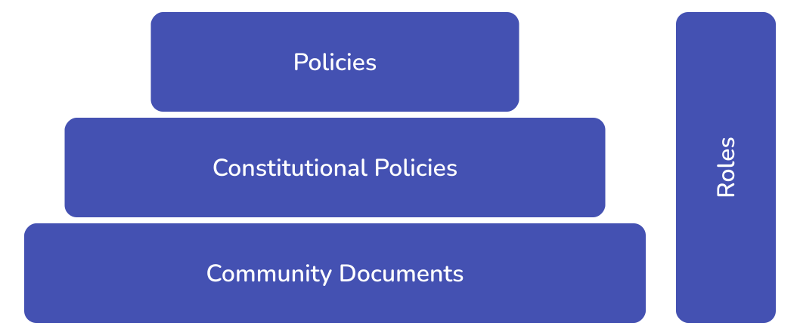

PolicyKit
Product design
Spring 2023
Redesign of a no-code Slack integration for online community governance.
Collaborating with researchers from the University of Washington and the Metagovernance project, I led the design efforts to enhance the usability and flexibility of PolicyKit, as well as created a complex no-code feature from scratch.

Context
Rethinking roles & permissions in online community governance
The admin-user model offers limited top-down governance options, leaving communities with autocratic and punitive approaches. But what if there was a way to embrace more democratic governance models tailored to community needs?
With PolicyKit, community members can easily author and implement a wide range of governance procedures on their preferred platforms.
I was invited to redesign PolicyKit to enhance its user experience and introduce a new feature: a no-code UI for creating policies.
Process
UX audit
Understanding the functionalities, evaluating the tool based on best practices and heuristics.
System mapping
Mapping out the content, terminology, and data schemas to base the redesign on.
Design & testing
Designing, iterating, and evaluating the key flows.
Creating a design system.
Objectives
Based on UX audit insights and product vision


the original interface


the platform before the redesign
Object-oriented IA
The actions and objects in the platform are detached
The home (main) screen allows to preview different policies, roles, etc. However, to act on them users need to go through a bloated 'propose action' flow.
Making the platform more object-oriented would help avoid confusion, duplicate pages, and help introduce new features more seamlessly.
A no-code Policy interface
Initially, PolicyKit only supported policies written in Python. A key objective of the redesign was to introduce a no-code interface to make authoring and editing Policies accessible to all member of a community.
A flexible design system
Initially, PolicyKit only supported policies written in Python. A key objective of the redesign was to introduce a no-code interface to make authoring and editing Policies accessible to all member of a community.
Onboarding
At the time of this project, there was no introduction to the playtform before install.
Then, once a user would install and signs in, they were faced with a blank home page.
An improved install & sign in flow would help introduce the value of PolicyKit to new users and guide them in getting started.
Over time, this should help with gradually decentralizing the community organization over time - an opportunity identified in past User interviews.
Core Features explained

Policies
Scripts that allow community members to vote for or against an action initiated by someone.
Constitutional Policies
Just like a Constitution, the policies determine how a community creates and modifies regular policies, roles, documents, and constitutional policies themselves.
Community Documents
Plain text documents outlining the guidelines and rules that cannot be captured in code.
Roles
Roles are policy bundless. They allow bulk-assigning specific permissions, both on the governance and the meta-governance layers.
Final design
The platform
The no-code interface
Onboarding
The no-code building blocks

a preview of policy building blocks
Flexible & adaptable
The no-code interface is based on a cohesive and adaptable UI toolkit that empowers users to create, customize, and manage policies seamlessly.
Composable
The no-code UI helps developers leverage pre-built components, styles, and patterns to design for multiple and often complex JSON schemas behind policies.
Next steps
Adoption
After launch, project owners will gather user feedback to understand how PolicyKit has influenced decision-making processes and community engagement, as well as identify the level of decentralization achieved.
Functionalities
It is crucial to continuously asses the clarity and understanding of PolicyKit's functionalities among users; how well users comprehend and utilize the various features and components of the platform.
No-code
Conduct testing to evaluate the ease of use, accessibility for non-technical and technical users alike.
site developed by Julija Rukanskaitė, based on software by Rasmus Andersson, 2019↗